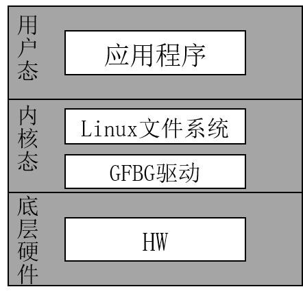
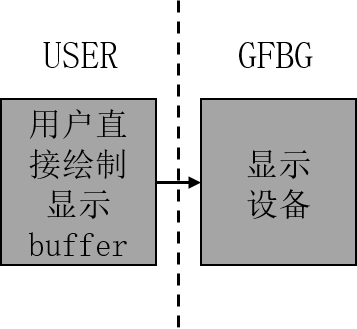

3. GFBG Function Description¶
3.1. Architecture¶
Applications use GFBG on Linux. The GFBG architecture is shown below.
{kind=link}

Figure 3.1 GFBG Architecture¶
3.2. Standard and Extended Functions¶
3.2.1. Standard Functions¶
GFBG supports the following standard Linux Framebuffer functions:
Map or unmap physical video memory in virtual memory space, allowing users to access physical video memory through virtual addresses for more efficient memory management and operations.
Operate physical video memory like a regular file, supporting read and write access through file interfaces and simplifying video-memory usage.
Set the hardware display resolution and pixel format. The maximum supported resolution and pixel format of each overlay graphics layer can be obtained through the capability interface, ensuring hardware-display flexibility and compatibility.
Read, write, and display from any location in physical video memory, allowing arbitrary video-memory locations to be operated on and providing greater flexibility for complex display requirements.
3.2.2. Extended Functions¶
GFBG adds the following extended functions:
Set and get the colorkey value of an overlay graphics layer.
Set the start position of the current overlay graphics layer (the offset from the screen origin).
Set and get the display state of the current overlay graphics layer (shown/hidden).
Configure the physical video-memory size and the number of overlay graphics layers managed by GFBG through module-loading parameters.
Set and get the compression-mode state; only non-compressed mode is currently supported.
Set/get the graphics-layer refresh type (0-buffer, 1-buffer, or 2-buffer); only 0-buffer mode is currently supported.
3.3. Graphics-layer Refresh Types in Extended Mode¶
GFBG provides upper-layer users with a complete refresh solution called FB extended mode. After considering system performance, memory, and graphics quality, users can select an appropriate refresh solution. The mode supports flexible refresh strategies, including 0-buffer, 1-buffer, and 2-buffer modes, to meet the performance and display requirements of different scenarios. It also provides fine-grained refresh-parameter control for efficient and stable rendering in complex display scenarios.
3.3.1. 0 buffer (that is, CVI_FB_LAYER_BUF_NONE) ¶
The drawing buffer used by the upper layer is also the display buffer. This refresh type significantly reduces memory consumption and provides the fastest refresh speed. However, because the drawing and display buffers are the same, users may see the drawing process directly, such as incomplete graphics or intermediate states. This mode is suitable when memory and performance are important but the visual effect during drawing is less important. An illustration is shown below.
{kind=link}

Figure 3.2 0-buffer illustration¶
3.3.2. 1 buffer (that is, CVI_FB_LAYER_BUF_ONE) Not supported yet¶
The display buffer is provided by GFBG and therefore requires memory. This refresh type balances display quality and memory requirements. By introducing a buffer between the drawing and display buffers, it prevents drawing from directly affecting the displayed content and improves display stability and consistency. However, the additional display buffer increases memory usage, and jagged edges may occur in some cases. These tradeoffs should be evaluated for the specific application. An illustration is shown below.

Figure 3.3 1-buffer illustration¶
3.3.3. 2 buffer (that is, CVI_FB_LAYER_BUF_DOUBLE) Not supported yet¶
The display buffer is provided by GFBG. Compared with the preceding refresh types, this mode consumes the most memory but provides the best graphics-display quality. Double buffering keeps displayed content stable and consistent while preventing drawing from directly affecting the display. It is suitable for applications requiring high display quality, such as high-quality graphics rendering or complex animation. An illustration is shown below.

Figure 3.4 2-buffer illustration¶
3.3.3.1. Graphics-layer Compression Not supported yet¶
Graphics-layer Compressionfunctionisrefergraphicallayercanenoughconnectreceivehardwarecompressiondata, andbased onthesecompressiondataperform decompressiondisplay. When display buffer dataunusedoccurchangewhen, graphicallayereachtimeallwillloadcompressionafterdataperform decompressiondisplay. enablecompressionfunctiongraphicallayercanvalidreducebustransferbandwidth, butneed toadditionaloutsideallocateoneframecompressiondatarequiredmemoryspace. throughthistypemethod, Graphics-layer Compressionfunctioninensuredisplayeffectat the same time, cansignificantly optimizesystemperformance, especiallyitsisinHighresolutionandhighrefreshratedisplaysceneunder, reducedatatransferpressure. thisoutside, thefunctionalsocaninmustdegreeonreducesystempower consumption, makeitsmoresuitable forembeddeddeviceand mobiledeviceetc.forpower consumptionsensitiveapplicationscene. howeverand, need toNoteis, enablecompressionfunctionmaywillincreasesystemresetcomplexness, andforhardwareandsoftwarecompatibility requirementsoutmorehighneed torequest, thereforeinactualapplicationinneed toaccording tospecificrequirementperform tradeoffandselect. A typical graphics-layer compression-buffer illustration is shown below.
{kind=link}
Figure 3.5 Graphics-layer compression buffer illustration¶